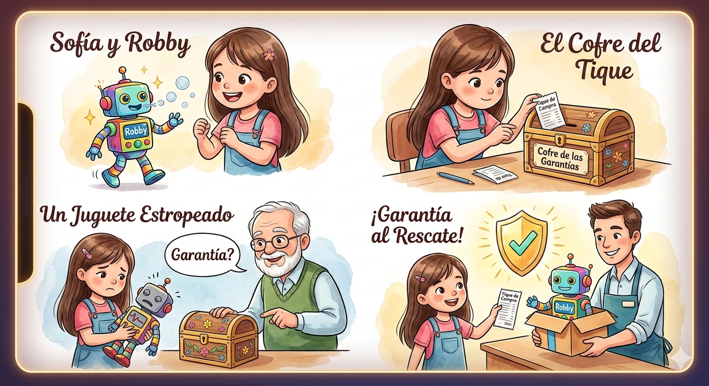

Sofía y el Superpoder del Tique Dorado
Había una vez una niña llamada Sofía a la que le encantaban los inventos. Para su cumpleaños, ahorró durante meses para comprar a "Robby", un robot que caminaba y lanzaba burbujas de colores.
A diferencia de otros niños, Sofía tenía un secreto: su abuela le había enseñado que ser un consumidor responsable es como tener un escudo mágico. Por eso, al salir de la tienda, dobló con cuidado el papelito que le dio el vendedor y lo guardó en una caja especial que ella llamaba "El Cofre de las Garantías".
—¿Para qué guardas ese papel tan aburrido? —le preguntó su amigo Luis.
—Este papel se llama tique de compra —respondió Sofía con seguridad—. Es mi prueba de que el juguete es mío y la promesa del fabricante de que debe funcionar perfectamente. Si Robby se estropea por un fallo de fábrica, este papel me protege.
Dos semanas después, ocurrió lo inesperado: Robby dejó de caminar y sus luces se apagaron, a pesar de tener pilas nuevas. Luis estaba triste: "¡Vaya, ahora no es más que un trozo de plástico!". Pero Sofía no se preocupó. Fue a su cuarto, abrió el cofre y sacó su tique intacto.
Al llegar a la tienda, mostró el tique al encargado. Gracias a que conocía sus derechos como consumidora, explicó con calma que el producto estaba en periodo de garantía. El vendedor, al ver el comprobante, le pidió disculpas y le entregó un Robby nuevo que funcionaba de maravilla.
Desde ese día, todos en el barrio aprendieron la lección: no importa lo grande o pequeño que sea el juguete, el tique de compra es el mejor amigo de un niño precavido.